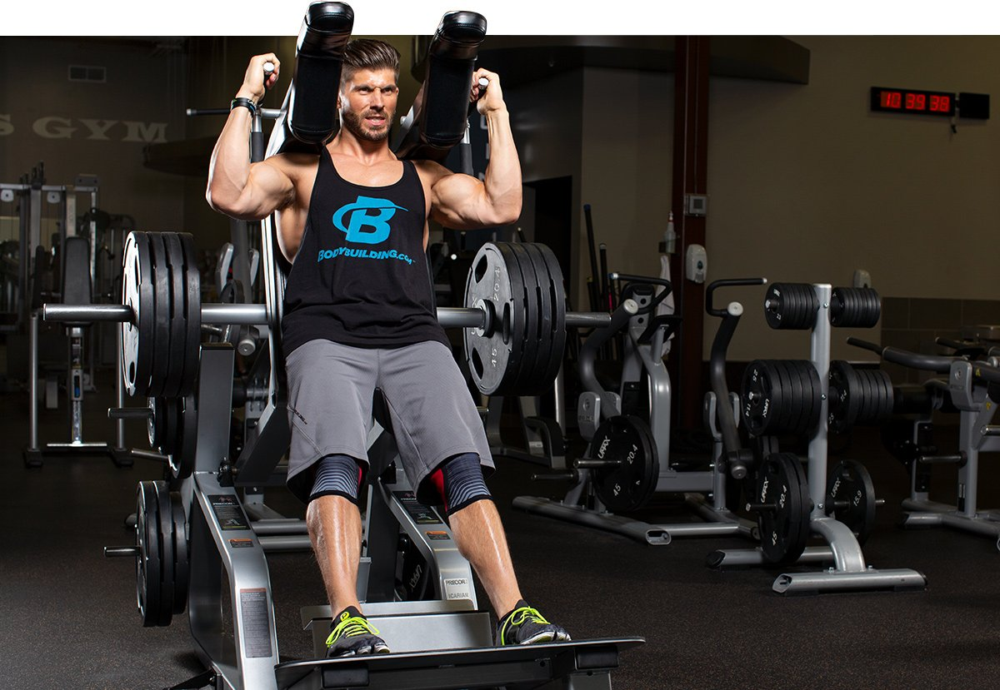

Roger Lockridge
October 25, 2024 • 3 min read
Chest | Back | Shoulders | Arms | Quads | Hamstrings | Calves | Abs
Leg day isn't the most popular workout with many trainees, and we all know why. It's hard. Take the quadriceps: They're big muscles, and it requires a lot of work to train them properly. The result can be serious soreness the next day, and the day after that, and maybe even the day after that. Don't let it stop you. Training quads regularly with solid Quad Exercises will eventually lead to less soreness after the workouts.
To get the most bang for your buck on leg day, use machines to intensify your focus on the target muscles. Yes, squats are the big-boy move for building thighs, but machines can serve you well if you give them a chance. If quads are your weakness, use machines as part of a structured Quads Workout.
This three-move session will go a long way toward helping your legs grow. You'll be so proud of them you may be tempted to wear shorts in the winter.
This Leg Press machine exercise has its fair share of critics, but when it's not used as an ego exercise with lots of plates and little movement, it can be very effective at developing the thighs. When setting up for the Leg Press, place your feet where you feel the quads are doing the most work. For some people, that could be right in the middle of the foot plate, about shoulder-width apart. If having your feet a little higher or lower on the plate works better for you, go for it.
Make sure you keep your entire foot connected when you push the Leg Press sled. Avoid locking out your knees at the top. Slowly lower the weight as far as you can safely. Don't shortchange that negative or your presses won’t be as effective. If you reach failure sooner than expected, place your hands on your thighs above your knees and assist with your arms as much as necessary.
The preferred machine for this workout is a plate-loaded Squat Machine. If all you have is a Hack Squat or Smith machine, go with that — even a hack squat machine will work. In most training programs, the reps decrease, and the weights increase throughout the workout. In this case, it's the opposite. You start with the heaviest set and remove weight for each successive set as the reps go up. This will challenge your quadriceps as well as your muscular endurance in a different way from what you may be accustomed to.
To make this even more fun, pause at the bottom of the rep. When you stand up, focus on contracting your quads. If you can't do that, lighten the weight on future sets. Using a Squat Machine or Hack Squat setup will help you stay stable as you work on this movement.
This will be a burnout finisher, and it's perfect to perform on a leg extension machine. Start with whichever leg you feel is the weaker one. Choose a light weight that you can perform a lot of reps with because that's what you're about to do. Perform 10 reps with the weaker leg, as you would during leg extensions, and when you finish, do the same with the other leg. As soon as you finish those 10, go back to the weaker leg and perform 9 reps. Do the same with the opposite leg. You catch the pattern? On each round, you do one fewer rep until you work down to one rep per leg, making these feel a lot like intense quad extensions.
Once you finish your singles, take 10 seconds to prepare yourself. Then, start with the weaker leg and perform as many reps as you can until you can't do another rep in good form—no jerking or momentum. As soon as you finish, do the same with the other leg. Once you reach form failure with that leg, you're done for the day, wrapping up your final set of leg extensions.